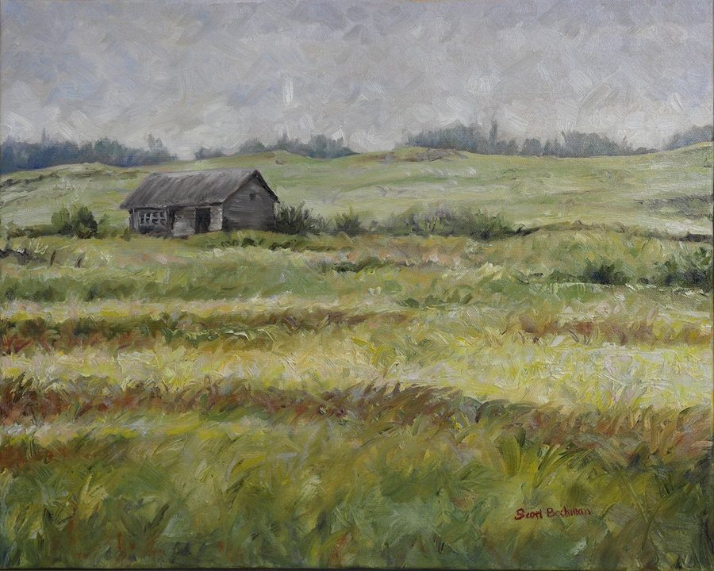
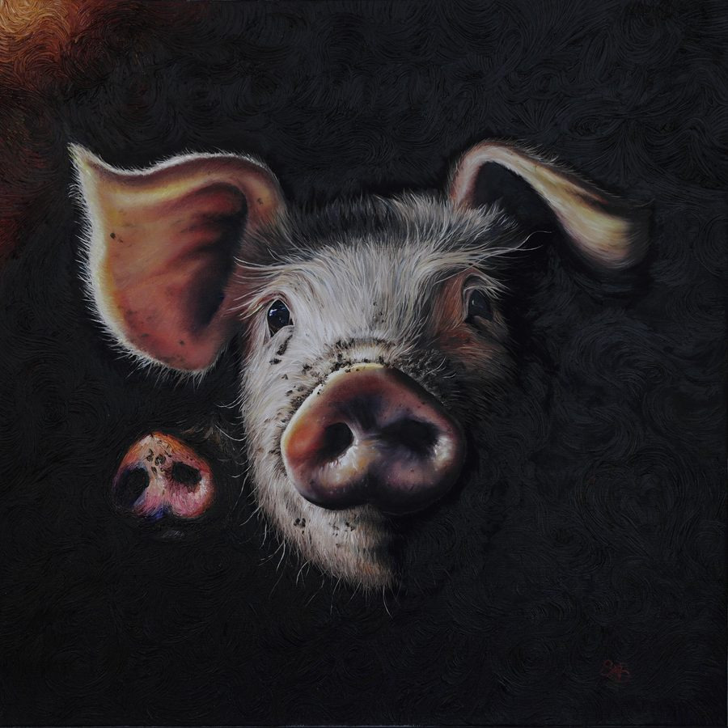

Original oil paintings · Central Arkansas
Paintingsthat holdlight.
Scott Michael Beckman paints flowers, animals, landscapes and people in oil, building every canvas layer by layer until it feels alive. Some even carry a hidden message.

Selected work
Every painting brings its own color.





A hidden message
Can you see the words in the paint?
A wedding giftJanuary 19, 2002
Scott gave Yellow Flowers to his wife Jana on their wedding day. Hidden in the texture of the petals and background is a message only they knew was there. More than twenty years later, it’s still the piece she loves showing people most.
Put your own message in a painting

Drag across the painting, or tap a button.
Available originals
Ready to hang, in frames Scott built by hand.
Scott mills the oak for his frames from trees on his own land, so the frame is as one-of-a-kind as the painting.


Old Barn
Oil on canvas, 2024 · 16 × 20 in
Available, ask about it
Framed by Scott in oak from his own land: stained dark grey, painted white and antiqued (18 × 22 in, 2.25 in deep).


Yellow House
Oil on panel, 2024 · 18 × 24 in
Available, ask about it
Framed by Scott in oak from his own land, stained grey for a deep brown finish (20 × 24 in, 2.25 in deep).

About the artist
Art is my lifelong pursuit. Each new work is an opportunity to grow and challenge myself. I strive to make every painting the best I’ve ever done.
Born in Cincinnati and now living in Central Arkansas, Scott is a U.S. military veteran and registered nurse who worked in Texas ICUs during the Covid-19 pandemic. Those years shape how he paints: patiently, and with an eye for the small moments that matter.
Read Scott’s story